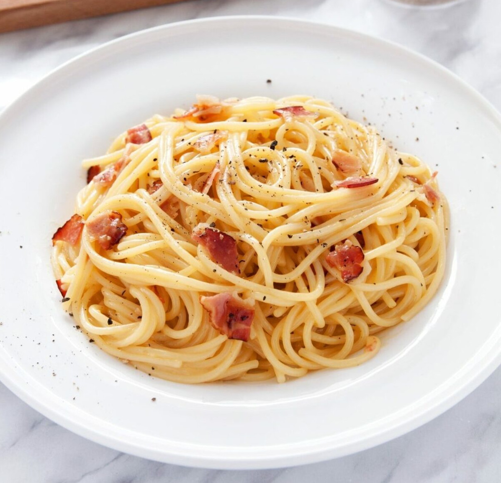

Spaghetti Carbonara

Description
Carbonara is a Roman dish made with eggs, hard cheese, and cured pork. Its signature rich and silky sauce comes from beaten eggs tossed with hot pasta. The trick to making carbonara is making sure the pasta is hot enough to cook the eggs, but not so hot that they curdle.
Ingredients
- 300g spaghetti
- 3 eggs
- 1 egg yolk
- 150g guanciale, cut into small cubes
- 3/4 cup grated Pecorino-Romano cheese
- salt and freshly grated black pepper
Steps
- Bring a large pot of lightly salted water to a boil. Cook spaghetti in the boiling water, stirring occasionally until tender yet firm to the bite. Drain.
- Heat a skillet over medium heat; cook and stir guanciale until crisp, 5 to 10 minutes.
- Whisk eggs and egg yolk together in a bowl; add Pecorino-Romano cheese, salt, and pepper and whisk well. Stir in guanciale. Add spaghetti and toss until evenly coated.
Cook's note:
If the egg mixture becomes too thick, add a little of the cooking water from the pasta to dilute the sauce. But remember, the eggs should never be scrambled!